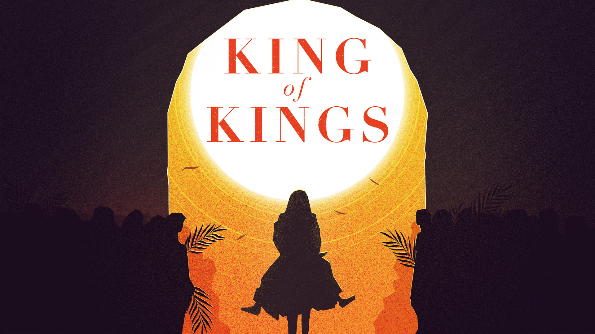

The Lord has made proclamation to the ends of the earth: “Say to Daughter Zion, ‘See, your Savior comes! See, his reward is with him, and his recompense accompanies him.’”
Isaiah 62:11 NIV
Rejoice greatly, Daughter Zion! Shout, Daughter Jerusalem! See, your king comes to you, righteous and victorious, lowly and riding on a donkey, on a colt, the foal of a donkey.
Zechariah 9:9 NIV
“Nazareth! Can anything good come from there?” Nathanael asked. “Come and see,” said Philip.
John 1:46 NIV
The way Jerusalem saw it, these country bumpkins had forgotten their place in society, having come to town to share up the establishment: “The whole city was stirred”
Rodney Reeves
It’s one thing to stage a little parade, pretending you’re a king. It’s quite something else to clear the temple, acting like you own the place.
Rodney Reeves